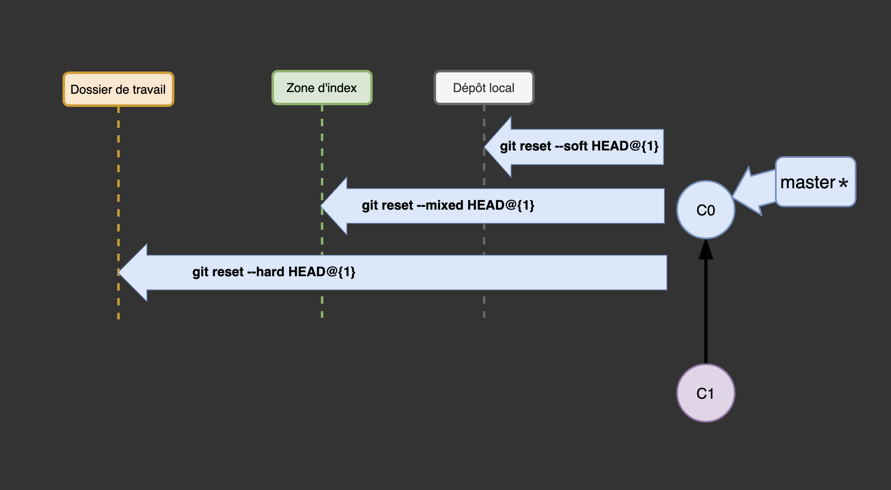

Logiciel de gestion de versions décentralisé - Suite
Eric Demers, Michel Gagnon et Lévis Thériault
C'est quand qu'on fait un commit?
Lorsque vous avez atteint un état avec le code dont vous souhaitez vous souvenir.
- Voyez le codage comme escalader une montagne
- Vous montez un peu, puis vous mettez un ancrage
- Vous ne tomberez donc jamais de plus de quelques mètres
[softwareengineering.stackexchange.com/questions/83837/when-to-commit-code]
Lorsque vous travaillez en équipe
- Faites souvent des commits dans votre dépôt local
- Faites souvent des merges dans votre dépôt local avec la branche principale du dépôt partagé
- Faites des branches pour pouvoir travailler sans déranger personne d'autre
- Faites des push / merge seulement lorsque vous avez effectué un changement autonome, complet et bien testé
[softwareengineering.stackexchange.com/questions/83837/when-to-commit-code]
Pourquoi associer une branche distante à une branche locale?
- Les commandes push et pull deviennent plus simple à utiliser.
- La commande git status peut alors nous donner des informations sur la branche distante
[git-tower.com/learn/git/faq/set-upstream]
La façon la plus simple d'associer une branche distante est d'utiliser --set-upstream lorsque vous poussez une branche dans le dépôt distant
$ git push --set-upstream origin <branch>
Une version plus courte qui fait la même chose
$ git push -u origin <branch>
Si la branche distante existe déjà ou si vous voulez changer la branche distante associée
$ git branch -u origin/<branch>
merge vs rebase
Ne faites jamais de rebase des commits qui ont déjà été poussés sur un dépôt public
Tiré du livre Pro Git, section 3.6
Ajoutez des fichiers ou changez le message
git commit --amend
$ git commit -m 'Commit initial'
$ git add fichier_oublié
$ git commit --amend -m 'Nouveau message'
Vous vous retrouvez avec un seul commit - le deuxième commit remplace les résultats du premier
Distinguez: reset, revert et restore
- reset: Remettre votre environnement local à un «commit» précédent en déplaçant le pointeur de la branche vers l'arrière.
- revert: Ajouter un nouveau «commit» pour annuler les modifications.
- restore: Retirer des changements du «Staging Area» ou même rejeter les modifications locales non validées.
Revenir à un état précédent
$ git reset --hard HEAD@{1}
git reset
Annuler les modifications spécifiées par le troisième parent du présent «commit» et créez une nouveau «commit» avec les modifications annulées.
$ git revert HEAD~3
Annulez des modifications
git restore
Git switch & Git restore [N5PpYGrH6_c]
Vérifiez les différences
git diff
Navigation historique
git checkout
Changer de branche
git switch
Exemples de services populaires de gestion de dépôts git sur le web

GitHub flow GitLab flow